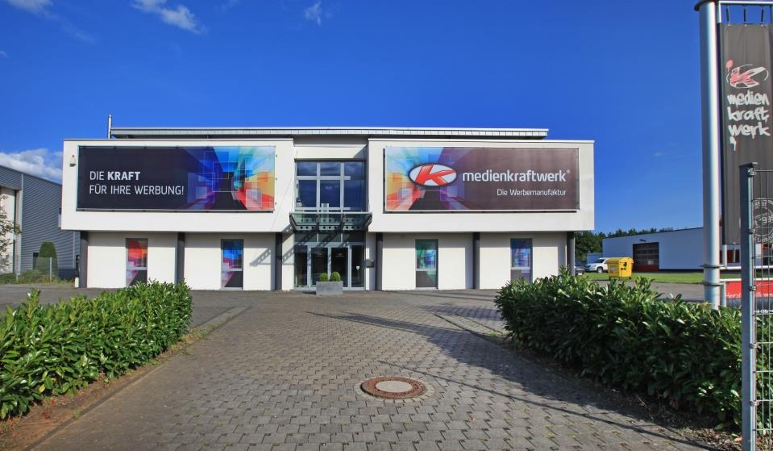

Medienkraftwerk Euskirchen
Mein erstes Praktikum habe ich bei der medienkraftwerk GmbH absolviert.
Hier machte ich ersten Erfahrungen mit den Adobe Programmen InDesign, Illustrator und Photoshop und konnte einen
Einblick in die Organisation und Arbeitsweisen der Grafik Abteilung gewinnen.